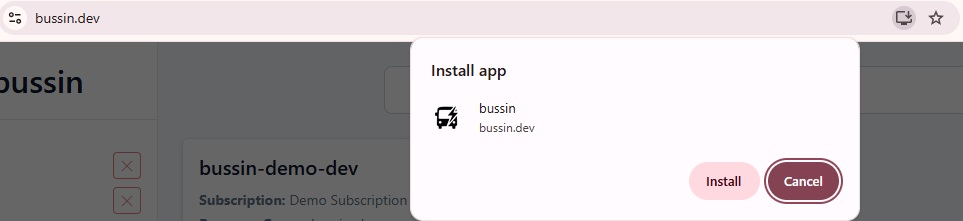
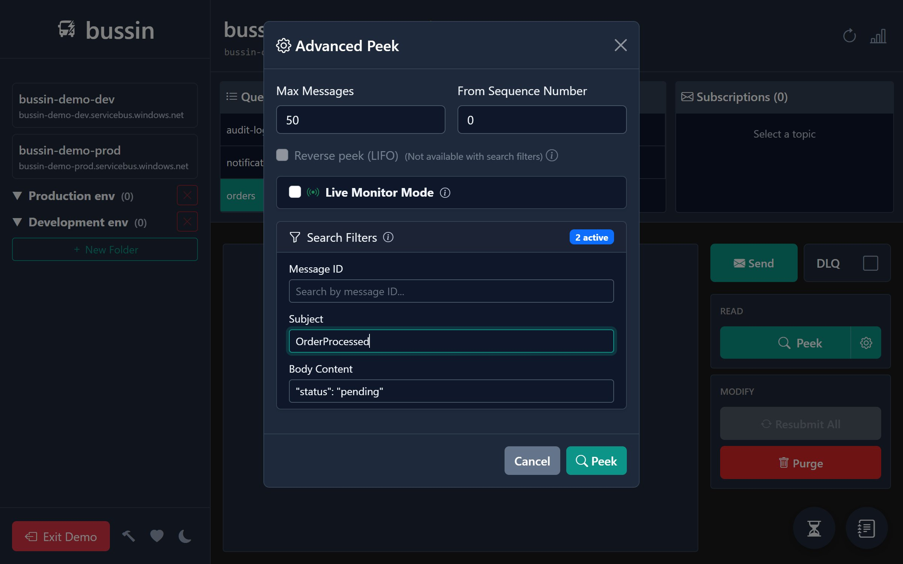

Bussin Power User Tips & Tricks
Namespace filtering, iterative 10k-message peeking, PWA install - tips that change how you debug Service Bus.
1. Type Anywhere to Filter
On the namespace selection screen, just start typing - you don't need to click the search box first. Bussin filters across namespace names, resource groups, and subscriptions simultaneously.
2. Install as a PWA
If you're using Chrome or Edge, look for the install icon in the address bar. Installing Bussin as a Progressive Web App gives you standalone windows and taskbar integration.

3. Peek 10,000 Messages Without Freezing
Bussin uses an iterative peeking strategy - it fetches messages in batches and streams them into the UI. You can start filtering and reading while the rest load. The Azure Portal caps you at 32; Bussin lets you go up to 10,000.

4. Filter After Peeking
Once messages are loaded, the inline filter narrows by message body content, MessageId, or Subject. Everything runs locally in your browser, so it's instant.
5. Batch Send from JSON
Need to replay a set of test messages? Prepare a JSON array and upload it via the batch send feature. Bussin parses each element as a message body and sends them all to the queue.
6. Dead-Letter + Resubmit Workflow
The fastest dead-letter debugging workflow in Bussin: Peek messages to understand failure, fix code, then hit Resubmit to move them back to the active queue.
7. Demo Mode for Onboarding
Use Run Demo to walk a new team member through Bussin without giving them Azure access. The demo environment is fully interactive.
8. Reverse Peek (LIFO)
Need to see the newest messages first? Enable Reverse peek (LIFO) in Advanced Peek. Bussin calculates the starting sequence number from the entity's message count and peeks backward - great for checking what was just sent.
9. Dark Mode
Click the moon/sun icon in the bottom-left of the sidebar to toggle dark mode. Your preference is saved in local storage and persists across sessions.
10. Entity Status Icons
In the entity selector, look for icons next to queue and subscription names. They tell you at a glance whether an entity is session-enabled, partitioned, has duplicate detection, or uses auto-forwarding - without opening the Azure Portal.
Open a GitHub Discussion at github.com/sgebb/bussin and share it!